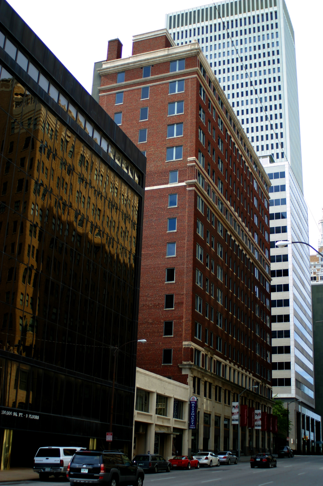

Someone in your group chat is going to say Tulsa sounds expensive because it sounds unfamiliar, and unfamiliar reads as fancy to people who have never priced a hotel room here. Let's correct that misunderstanding immediately. Tulsa is one of the more affordable mid-sized cities left in the country, and queer Tulsa specifically runs on free parks, no-cover bar nights, and a community calendar that costs nothing to attend. You do not need a trust fund. You need a weekend and the willingness to walk more than you drive.
This is a real itinerary, not a vibes-based fantasy. It assumes you already have a place to sleep, whether that's a friend's couch, a cheap Airbnb split three ways, or your own bed because you already live here. Lodging is its own line item and every city on earth breaks a budget guide the second you add a hotel to it, so we're isolating the part that's actually within your control: food, drinks, and having a good time.
Is Tulsa Actually Cheap? The Honest Math
Here's the math, done plainly, because vague reassurance has never once helped anyone plan a weekend. A cup of good coffee runs about five dollars. A solid diner meal, the kind that actually fills you up, lands somewhere between ten and fifteen. A well drink or a domestic beer at most Tulsa bars runs five to seven dollars, and that's before you start being smart about it, which we'll get to. Add it up across a Friday night, a full Saturday, and a Sunday morning, and you land comfortably under sixty dollars without once feeling like you skipped anything.
The trick isn't deprivation. It's knowing which parts of queer Tulsa are genuinely, permanently free, and building your weekend around those first.

What's Completely Free in Gay Tulsa
Gathering Place, 66 acres along the Arkansas River, is free, gorgeous, and heavily used by the queer community on any sunny afternoon. This is not a consolation prize while you wait for the bars to open. This is one of the best public parks in the entire United States, and it costs you exactly nothing to spend an entire day there.
Walking the Arts District and Cherry Street is free, and both neighborhoods are built for it. Browse the galleries, poke into Magic City Books, window shop the vintage stores on East 15th, and let an afternoon disappear. Nobody's charging admission to a neighborhood.
Oklahomans for Equality runs community events at the Dennis R. Neill Equality Center (621 E 4th St) that are frequently free to attend. If you're visiting or newly arrived and want to meet people without spending a dime, check their calendar and walk in.
Outdoor community events at spots like Guthrie Green regularly run free live music and gatherings, and the queer community shows up for them. Follow local event pages so you know what's on before you land.
The No-Cover Truth Nobody Tells You
People assume a gay bar means a cover charge, a bouncer with a clipboard, and a velvet rope you don't have the outfit for. That is not how Tulsa works. Most nights, you can walk into any of the city's three dedicated gay bars and pay absolutely nothing to get in the door.
Once you're inside, the budget lever is simple: nurse a drink, tip your bartender well anyway, and remember the show, the crowd, and the company are the actual reason you came. Want the full breakdown of each venue's personality before you pick one? Read the complete Tulsa gay bars guide.
Your Weekend, Line Item by Line Item
Here is exactly how this adds up, written out so you can see the receipts instead of taking our word for it.
Friday Night: $17
- Coffee at Gypsy Coffee House to reset after travel: $5
- Free walk through the Arts District at golden hour: $0
- Two drinks at YBR or the Eagle, no cover: $12
Saturday: $24
- Morning and early afternoon at Gathering Place: $0
- Lunch at Dilly Diner in the Blue Dome District, splitting a plate if you're being efficient: $10
- Two drinks at Club Majestic, no cover most nights: $14
Sunday: $17
- Coffee at Pony Coffee: $5
- Free browse through Magic City Books, no purchase required to feel something: $0
- A modest brunch item somewhere on Cherry Street before you head out: $12
That's fifty-eight dollars across an entire queer Tulsa weekend, and there's room to spare. If you skip one round of drinks or bring your own coffee, you're solidly under fifty. This is not the bare minimum. This is a genuinely full weekend, done honestly.
Where to Actually Spend Your Money
If you do have a little extra to spend beyond the fifty-eight dollar frame, spend it deliberately, not accidentally. Tip your bartenders and your drag queens generously; that money moves directly into the community that's entertaining you, and everyone working that room knows exactly who tips and who doesn't. Put a few dollars toward a queer-owned business while you're in the neighborhood, whether that's a coffee shop, a bookstore, or a restaurant. And if Oklahomans for Equality has a donation jar out at an event you enjoyed for free, that's the moment to close the loop.
Skip the temptation to Uber everywhere. Downtown, the Arts District, and Cherry Street are close enough together that a determined walker covers most of a weekend on foot, and that's real money staying in your pocket instead of leaving it in someone else's app.
The Rules That Keep You Under $60
Front-load the free stuff. Gathering Place and neighborhood walking cost nothing and take up the most hours, which does the heaviest lifting on your budget without you noticing. Pick one bar night, not three; the point isn't to hit every venue in forty-eight hours, it's to actually enjoy the one you're in. Eat one real meal a day and snack the rest, because Tulsa's diners and food trucks are generous with portions. And check venue Instagram accounts before a weekend with a big touring drag act or a holiday event, since that's the rare night a cover charge shows up.
None of this requires you to feel like you're roughing it. It requires you to know where the free things are, which is exactly what this entire website exists to tell you every single Monday.
Find It
Gathering Place · 2650 S John Williams Way, Tulsa, OK 74114
Dennis R. Neill Equality Center · 621 E 4th St, Tulsa, OK 74120
Know a free thing we missed?
Got a free event, a no-cover night, or a cheap gem we should be covering? Hit submit and we'll add it.
Submit an Event →